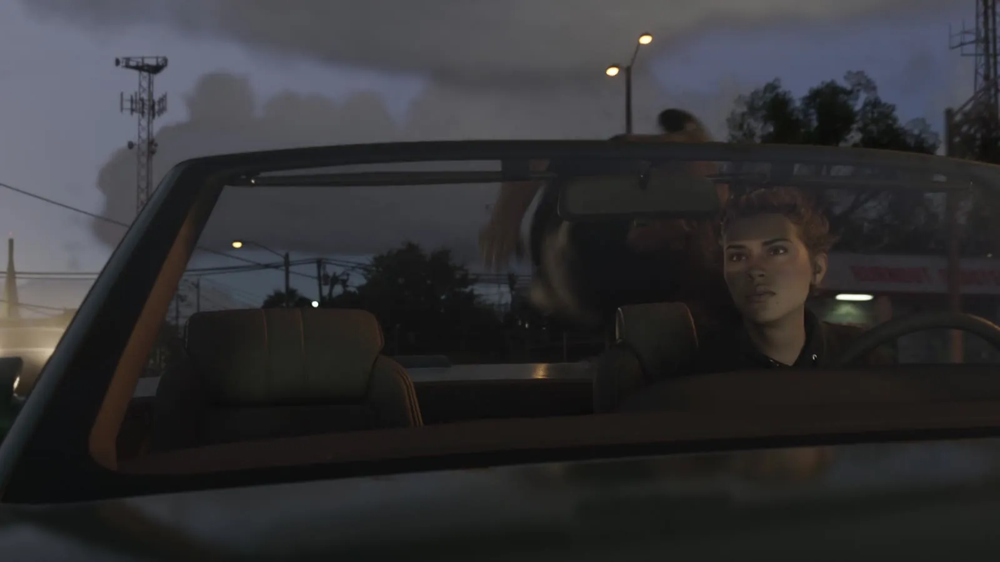

Настоящие машины GTA 6: Grotti Cheetah за £1 млн и ещё пять от West Coast Customs
Опубликовано:

- West Coast Customs построили шесть настоящих машин из GTA 6 — они проехали колонной по Майами.
- Grotti Cheetah собрана на базе Ferrari Testarossa и продаётся в Selfridges за £1 млн.
- В 2013 году та же мастерская сделала Bravado Banshee для GTA 5 — её разыграли через GameStop.
Шесть машин
Перед релизом Rockstar превратила машины из GTA 6 в настоящие. Сделала их мастерская West Coast Customs из Лос-Анджелеса — та самая, что прославилась шоу «Тачку на прокачку» (Pimp My Ride) на MTV. Шесть машин проехали по Майами с номерами Вайс-Сити для рекламной съёмки. У Rockstar нет лицензий автопроизводителей, поэтому у машин свои марки: Grotti — пародия на Ferrari, Pegassi — на Lamborghini.
| Машина в GTA 6 | На что похожа |
|---|---|
| Grotti Cheetah | Ferrari Testarossa (собрана на её базе) |
| Pegassi Tempesta | Lamborghini |
| Progen Emerus | McLaren Senna |
| Invetero Coquette | Chevrolet Corvette |
| Albany Buccaneer | американский лоурайдер 70-х |
| Albany Manana | американский лоурайдер |
Базовая машина официально названа только у Cheetah; у остальных — сходство по внешности, о котором пишут Notebookcheck и Wallpaper.
Grotti Cheetah за £1 млн
Главная из шести — Grotti Cheetah. Её собрали из настоящей Ferrari Testarossa: покраска в стиле Вайс-Сити с переходом из розового в синий, салон из итальянской кожи, вместо гарцующего коня Ferrari — значок Grotti. Машину выставили в лондонском универмаге Selfridges, в пространстве The Corner Shop, которое на время релиза превратили в Вайс-Сити. Купить её можно через персональных консультантов Selfridges за £1 млн (около $1,3 млн). Это единственная из шести машин, которая продаётся и которую привезли в Лондон.
Selfridges описывает её так: мало какая машина олицетворяет GTA так, как Grotti Cheetah. West Coast Customs 9 ноября назвали её шансом «владеть частью истории автомобилей и игр».
Настоящая Testarossa и «Полиция Майами»
Ferrari Testarossa впервые показали 2 октября 1984 года в парижском клубе «Лидо» на Елисейских Полях, а затем — на Парижском автосалоне. Дизайн — ателье Pininfarina: широкий кузов и знаменитые боковые рёбра воздухозаборников. Мотор — 4,9-литровый оппозитный двенадцатицилиндровый, 390 л. с. Название значит «рыжая голова» — по красным крышкам головок цилиндров. С 1984 по 1991 год выпустили 7177 машин.
Иконой 80-х Testarossa стала благодаря сериалу «Полиция Майами» (Miami Vice): с 1986 года детектив Санни Крокетт ездил на белой Testarossa. Ferrari сама передала создателям две машины — после того как подала в суд на шоу за поддельную Daytona в первом сезоне. Поэтому Cheetah из Вайс-Сити и копирует Testarossa: это машина Майами 80-х. А GTA Vice City (2002) была прямой данью уважения «Полиции Майами». Сравнение города с реальностью — на странице Вайс-Сити и Майами.
Как было в 2013-м
Для GTA 5 West Coast Customs построили одну машину — Bravado Banshee на базе Dodge Viper. Rockstar разыграла её через сеть магазинов GameStop. По данным GTA BOOM, выиграла бабушка из Северной Каролины, а её сын через пару лет продал машину гораздо дешевле, чем стоила постройка. В 2026-м машин уже шесть, а главную продают за миллион фунтов.
Cheetah в самой игре
В GTA 6 машина называется ’95 Grotti Cheetah и входит в Ultimate Edition — подробнее в статье Издания и цены GTA 6: Standard, Ultimate и бонус предзаказа — что входит и стоит ли переплачивать. Rockstar описывает её как «фирменный спорткар Grotti середины 90-х и оду Shore Drive». Cheetah — одна из старейших машин серии: она была ещё в GTA 3 (2001) и GTA Vice City (2002).
- West Coast Customs уже строили машину для Rockstar в 2013 году — тогда одну, теперь шесть.
- Ferrari Testarossa — ещё и звезда аркады OutRun (Sega, 1986).
- Дону Джонсону, игравшему Крокетта, позже подарили личную серебристую Testarossa 1989 года.
Частые вопросы
Можно ли купить настоящую машину из GTA 6?
Да: Grotti Cheetah на базе Ferrari Testarossa продаётся в Selfridges (Лондон) за £1 млн.
Сколько настоящих машин GTA 6 построили?
Шесть: Grotti Cheetah, Pegassi Tempesta, Progen Emerus, Invetero Coquette, Albany Buccaneer и Albany Manana.
Какая реальная машина у Grotti Cheetah?
Ferrari Testarossa — суперкар 1984 года, прославленный сериалом «Полиция Майами».
Источники: GTA BOOM, 11.11.2026; Supercar Blondie, 10.11.2026; Notebookcheck; Complex (пресс-релиз Rockstar и WCC); Wallpaper; Man of Many; Ferrari Magazine; Petrolicious; Wikipedia «Ferrari Testarossa»; supercars.net; conceptcarz.
Каждый день — одно сравнение: кадр игры рядом с реальным фото. Подписывайтесь:
YouTubeInstagramTikTok